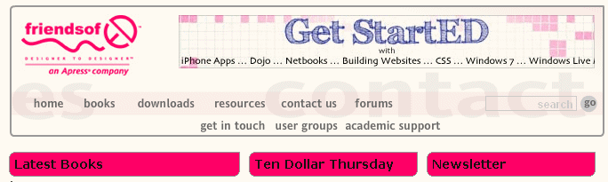

Favorite Sites
The Jeanine Meyer's Academic Activities displays information on my current and past courses, along with publications and other activities.
The Stolen Chair Theatre Company is the web site of a theatre company performing mainly in New York City. This is the postcard for their Summer, 2010 production.
The friends of ED publishers is the site for the publishers of this book.
